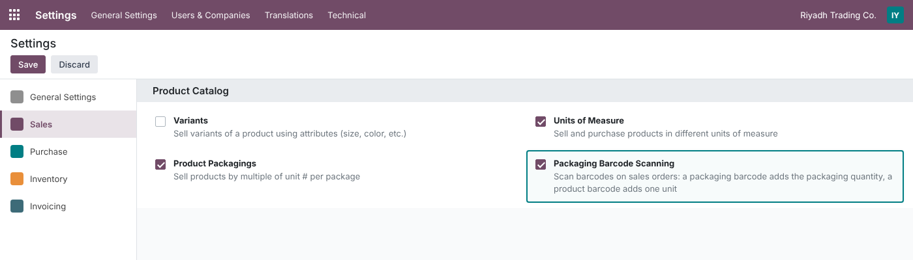
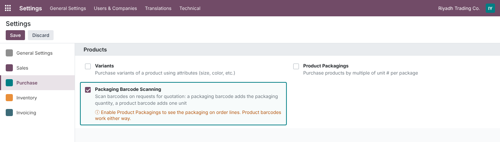
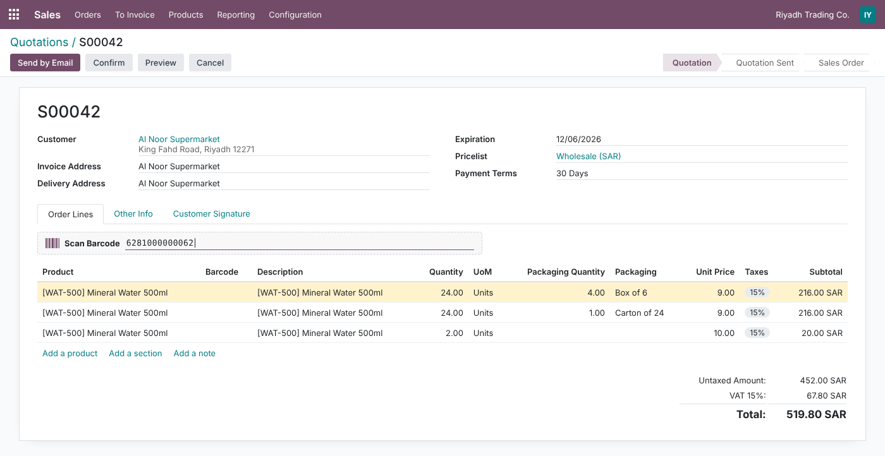
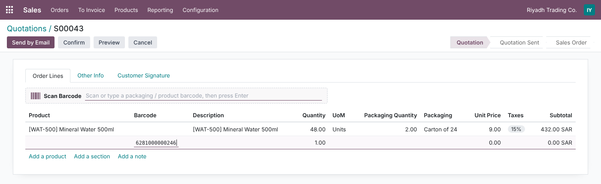
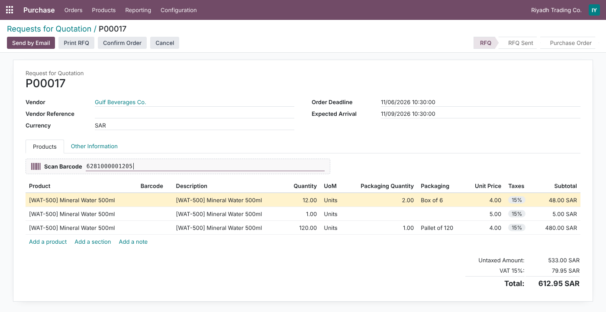
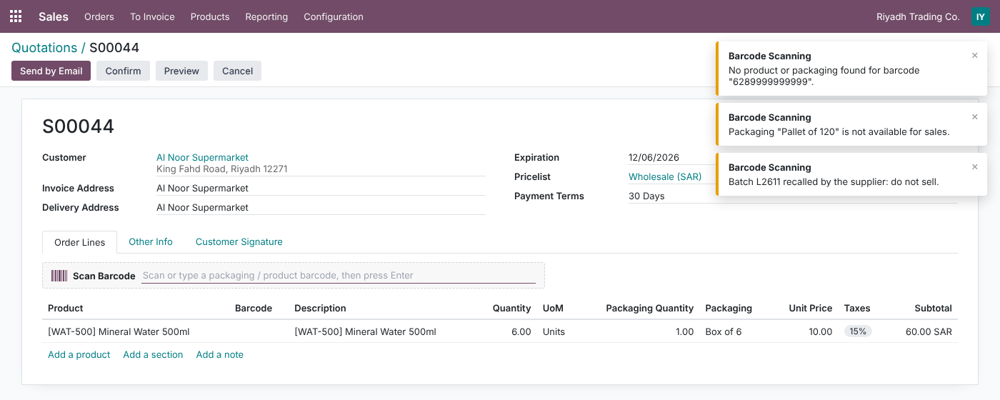
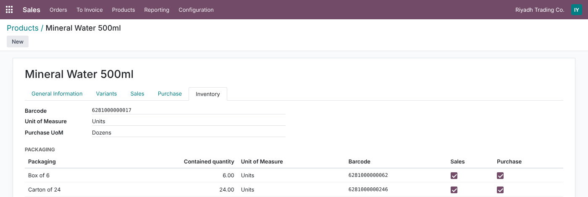
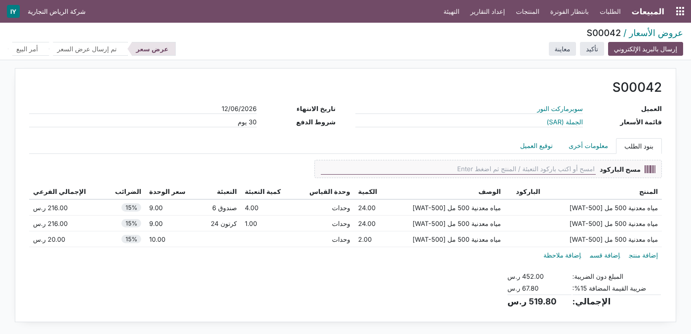

Scan the barcode of a box, a carton or a single item straight into a quotation or an RFQ. The line gets the right product, the packaging’s full quantity and the correct price, with no typing and no quantity mistakes.
Odoo 16 stores barcodes on products and packagings, but sales and purchase order lines cannot use them.
Four steps, no training needed.
Screenshots use demo data: Mineral Water 500ml (sold in Units, bought in Dozens) with three packagings, Box of 6, Carton of 24 and Pallet of 120 (purchase only); a Wholesale pricelist at 9.00 from 24 units (list price 10.00); and a vendor price of 48.00 per dozen from 1 dozen (cost 5.00).
Sales › Configuration › Settings › Product Catalog › Packaging Barcode Scanning and Purchase › Configuration › Settings › Products › Packaging Barcode Scanning. Both are off by default and stored per company. The module adds no menus. When Product Packagings is off, the setting shows a hint: product barcodes still work, but the packaging column is hidden on order lines.


The Scan Barcode box sits above the Order Lines. A handheld scanner (USB or Bluetooth) works without clicking the box first. Here the Box of 6 barcode was scanned 4 times, the Carton of 24 once and the product barcode twice. The result is 24 Units with Packaging Quantity 4.00, then 24 Units with 1.00, then 2 Units. The 24-unit lines reach the pricelist break (9.00 instead of 10.00). The box line keeps Box of 6 as its packaging; Odoo is not allowed to switch it to the carton.

The Barcode column (optional, shown by default) fills the line you are editing. Type or scan a barcode and press Enter: product, unit, quantity and packaging are set. Entering the line’s own barcode again adds one more package or unit. The column is hidden when the feature is off. On a sales line whose product can no longer be changed (for example, already delivered or invoiced), the column is read-only.

The same scanning works on Requests for Quotation. The line uses the packaging’s unit (Units), not the product’s purchase unit (Dozens). Odoo’s own vendor-price rules then run on that quantity. 1 box (6 units) is below the vendor minimum of 1 dozen, so the line uses the cost (5.00). A second box makes 12 units, and the line switches to the vendor price: 48.00 per dozen = 4.00 per unit. The purchase-only Pallet of 120 can be scanned here, but not in Sales.

Problems appear as non-blocking notifications titled Barcode Scanning, so the next scan can follow straight away. Examples: unknown barcode, packaging not enabled for Sales or Purchase, product not Can be Sold / Can be Purchased, packaging or product from another company, archived product, missing customer or vendor, order in a state that cannot be changed. Product warnings set to Blocking Message (in Purchase, when Warnings are enabled, as in standard Odoo) stop the scan and show the product’s message. Plain warnings add the line and show the message.

Nothing new to configure on products. The module reads the standard Packaging lines (Contained quantity, Barcode, Sales, Purchase, company) and the product’s own Barcode. Odoo already keeps every barcode unique across products and packagings, so each barcode points to exactly one item.

Everything the module adds is translated into Arabic (ar_001): settings, the مسح الباركود box, the line column, field help and every scanning message. The styling uses logical (start/end) spacing, so the scan bar mirrors cleanly in right-to-left layouts.

The scan bar is only shown, and the scanner only listens, when changes are allowed.
Each case is handled in the code; all except down payments are also covered by automated tests.
No new groups or record rules: the module relies on Odoo’s existing access rights.
| Who | Can |
|---|---|
| Settings administrators | Turn scanning on or off in Sales and Purchase settings |
| Sales users | Scan on the quotations and orders they can already edit |
| Purchase users | Scan on the RFQs they can already edit |
| Multi-company | Switches stored per company; other companies’ products and packagings are refused; record rules respected (lookups do not use sudo) |
| Odoo version | 16.0, Community and Enterprise |
| Depends on | sale, purchase, barcodes (all standard) |
| Python dependency | None |
| Menus | None added. Works inside the standard Quotation, Sales Order and RFQ forms |
| Settings | Sales › Configuration › Settings › Product Catalog; Purchase › Configuration › Settings › Products |
| Models | No new tables. Two abstract mixins (packaging.barcode.order.mixin, packaging.barcode.line.mixin) applied to sales and purchase orders and lines; two Boolean fields on res.company |
| Performance | Lookups use Odoo’s existing barcode indexes (unique index on packaging barcodes, partial index on product barcodes); no extra index, no write overhead |
| Automated tests | 19 tests: settings, resolution order and errors, multi-company, product warnings, sales and purchase scanning (scan box, scanner and line), price breaks, the purchase quantity reset, confirmed orders, query count and indexes, a 300-scan burst, Arabic translation |
| Translations | Arabic (ar_001), complete; .pot template included |
| License | LGPL-3 |
Questions, a demo, or an adaptation to your own process (GS1 barcodes, lot scanning, POS)? Get in touch.
✉ ibrahim.yahiah@gmail.com LinkedIn: Ibrahim YahiaAuthor: Ibrahim Yahia · License: LGPL-3